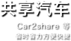
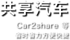

安仁古镇地处成都平原西部，位于成都市大邑县，距成都市区41公里，大邑县城8公里。安仁地名取“仁者安仁”之意而得名。古镇始建于唐朝，现存的旧式街坊建筑多建于清末民初时期，尢以民国年间刘氏家族鼎盛时期的建筑最多，风格中西式样结合，庄重、典雅、大方的各式院落，造就了安仁镇特殊的建筑风貌，号称“川西建筑文化精品”。2009中国博物馆学会正式授予安仁“中国博物馆之乡”称号，至此安仁古镇成为中国唯一以博物馆命名的小镇，以文化旅游产业发展的城镇文化。
成都市属中亚热带湿润季风气候区,冬无严寒、夏无酷暑，气候非常适宜，因此成都一年四季都适合旅游。
但由于成都地处盆地，气候温润，空气相对流通较弱。
 

地铁
目前成都已开通地铁1、2、3、4号线，起步价为2元/ 人，最高单程票票价为7元
公交
大部分为无人售票。单程通票2元/人；少数由主城区开往郊县的公交线路为有人售票公交，票价大多为2元/人~3元/人。
出租车
车型不同，出租车起步价不同。8元起跳。
押金 20 元/ 张
各公交营运点或者地铁站都有销售，第一次至少充值10 元。使用天府通卡可乘坐成都市市区地铁线路和所有安装天府通公交POS机具的公交线路，并可享受地铁票价9折优惠和主城区范围内公交线路票价5折优惠。
退卡退款：
用户办理押金卡退卡，须出示押金凭证和退卡人身份证原件，并确保原卡表面完好无损，使用正常。